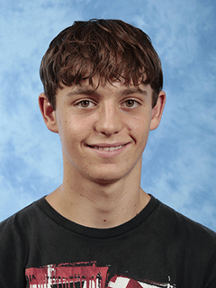

DAUNER Nathan
Le HTML et le CSS sont une de mes passions. J’aime coder et apprendre de nouvelles technologies pour améliorer mes compétences.
Français, langue maternelle
Anglais, Allemand, compétence professionnelle
2024 - 2025 : Année de césure à l'école théologique de la Chapelle de Fuveau
2025 - 2028 : Licence d'Histoire à Aix-Marseille Université
2028 - 2030 : Master en Histoire ou Archéologie
2030 - ... : Début de carrière, puis doctorat en Archéologie